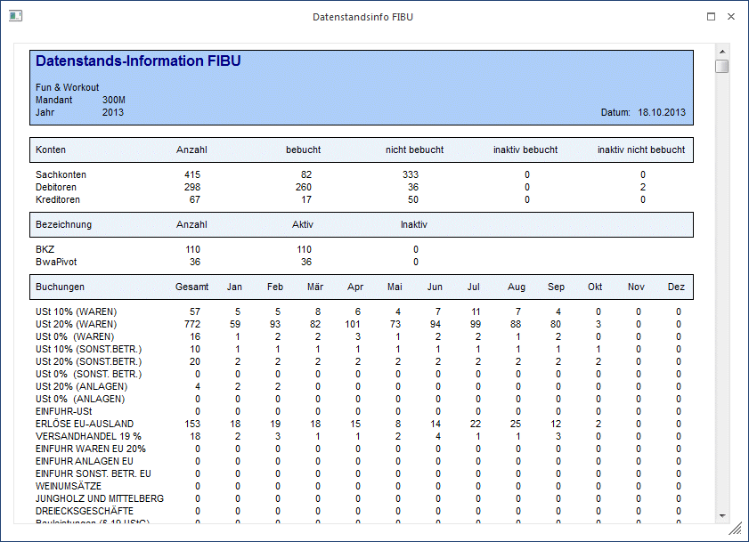

Die Datenstands-Information in der WinLine bietet Ihnen einen übersichtlichen Überblick über alle Stammdatenbereiche von WinLine FIBU.
Die Datenstands-Information finden Sie im Menüpunkt…
1 WinLine FIBU
1 Datei
1 Datenstands-Info

Inhalt der Datenstands-Information:
Konten
a) Sachkonten: Gesamtanzahl
wie viele Sachkonten sind bebucht
wie viele Sachkonten sind nicht bebucht
wie viele Sachkonten sind inaktiv gesetzt
wie viele der inaktiv gesetzten Sachkonten sind bebucht
Hinweis
Hauptbuchkonten, die nicht selbst direkt bebucht worden sind, werden nicht bei der Ermittlung der "Anzahl der bebuchten Konten" berücksichtigt.
b) Debitoren: Gesamtanzahl
wie viele Kundenkonten sind bebucht
wie viele Kundenkonten sind nicht bebucht
wie viele Kundenkonten sind inaktiv gesetzt
wie viele der inaktiv gesetzten Kundenkonten sind bebucht
c) Kreditoren: Gesamtanzahl
wie viele Lieferantenkonten sind bebucht
wie viele Lieferantenkonten sind nicht bebucht
wie viele Lieferantenkonten sind inaktiv gesetzt
wie viele der inaktiv gesetzten Lieferantenkonten sind bebucht
Sachkonten BKZ/BWA
Ø Gesamtanzahl der angelegten BKZ/BWA
wie viele BKZ/BWA sind aktiv
wie viele BKZ/BWA sind inaktiv
Buchungen
In diesem Punkt bekommen Sie eine übersichtliche Darstellung welche Steuerzeilen bebucht wurden.
Zusätzlich können Sie feststellen, in welchen Monaten bzw. Perioden und wie oft die Buchungen auf diesen Steuerzeilen getätigt wurden.
Jahresjournal-Buchungsart
Von jeder Standard-Buchungsart wird die Anzahl der Buchungen (gesamt und aufgeteilt auf Monate/Perioden) aufgelistet.
Bei DF/KF/KZ/DZ-Buchungen wird zusätzlich die Betragssumme aller Buchungen (gesamt und aufgeteilt auf Monate/Perioden) angedruckt.
OP-Fakturen
Unter diesem Punkt bekommen Sie alle Kreditorenfakturen/Debitorenfakturen aufgelistet - gesamt und sortiert nach Mahnstufen. Ebenfalls enthält die Datenstands-Info die Summen aller offenen Fakturen (Anzahl und Betrag).
OP-Zahlungen
Übersicht über die Anzahl aller Offenen Posten und die dazugehörigen Summen. Unter "OP-Zahlungen" werden prinzipiell die Anzahl der Teilzahlungen zu den offenen OPs angezeigt. Wenn man eine Zahlung zu einer bestehenden Faktura bucht und die Faktura dadurch nicht ausgeglichen wird, wird sie hier berücksichtigt. Wenn man eine Vorauszahlung bucht, die nicht sofort einer Faktura zugeordnet wird, weil man dieselbe Fakturennummer verwendet, wird sie ebenfalls hier angezeigt. Wenn man aber mittels Zahlungsbuchung eine Gutschrift erzeugt, ist das technisch gesehen eine Faktura und wird dementsprechend auch unter "OP-Fakturen" angezeigt.
Journalzeilen Stapel
Gibt Auskunft darüber, wie viele Journalzeilen die einzelnen Stapel enthalten.
Buttons
Ø Ende
Durch Drücken des Ende-Buttons schließen Sie die Übersicht.
Ø Refresh
Durch Drücken des Refresh-Buttons werden die Daten neu durchgerechnet und die Datenstands-Information aktualisiert.
Ø Drucken
Durch Drücken des Drucken-Buttons können Sie die Datenstands-Information am Drucker ausgeben.